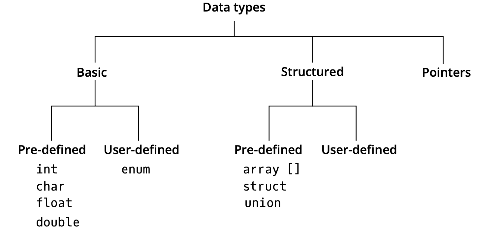

C Programming Basic¶
I: C Programming Basics and Input and Output¶
1: Input¶
1.1: Scanf¶
scanf("%s",&name);//%s for string
scanf("%d",&number);//%d for intrigue
scanf("%c",&character);//%c for characters
scanf("%f",&floatnumber);//%f for floatnumbers
scanf("%i",&signedDecimalInt);//%i for signed decimal intrigue
scanf("%o",&unsignedOctalInt);//%o for signed octal int
scanf("%x",&unsignedHexdecinmal);// X for upper hexadecimal,x for lower hex
scanf("%a %b",&a,&b);//input two numbers
scanf("%4d",a);// right specifying the result up to 4 digit (all the result to the right side)
scanf("%.4d",a);// if a = 123 , the result will be 0123
scanf("%.4f",a);// if a = 123.45678, the result will be 123.4568
scanf("%4.4f",a);// The combination of above
scanf("%*.*f",4,4,a);// Same as the last line
// Using the scan set in scanf can terminated the input at specified character
scanf("%8[aeiou]", z); // The string input will be stopped if the letter is not one of 'aeiou'
scanf("%8[^aeiou]", z); // inverted scan set
// It is available to skip certain characters in the input stream:
scanf("%d-%d-%d", &month, &day, &year);
// For the input 02-22-2003, the '-' will be discorded
scanf("%d%*c%d%*c%d", &month, &day, &year);
//For the 02/22/2003, use '* can ensure the input cannot be stored will be discorded.
- Note that scanf cannot recognize the "space".
1.2: fgets()¶
fgets(name,sizeof(name),stdin);
- fgets() can be use to input the string.
- Notes that it can accept the "space", but there will be an additional "return" in the end.
- A pointer can be use to delete the final "return":
char *find;//a pointer of the string
fgets(name,sizeof(name),stdin);
find = strchr(name,'\n');//a function in string.h which can be used to return the address of the first place of '\n'
*find = '\0';
2: Output¶
2.1: Common use of printf()¶
// Print the intrigue
printf("%d",&a);// output intrigue
printf("%d %d",&a,&b);//output with space between them
// Print the float number
printf("%e",123.456);// The result will be 1.23456e+002
printf("%f",123.456);//Print 123.456000, six digits in the right side of point
// Print the String and characters
printf("%s\n","hello world");//The conversion specifier 's' will terminated at '\0'.
printf("%p\n",ptr);// The '\p' can be used to print the address of a pointer points to.
2.2: Using Flags in the printf format control string¶
printf("%10s%10d%10c%10f\n\n", "hello", 7, 'a', 1.23);
// Using the right justifying
printf("%-10s%-10d%-10c%-10f\n", "hello", 7, 'a', 1.23);
// Add a '-' can make it to left justifying
printf("%+d\n%+d\n", 786, -786);
// Add '+' to the positive number in the result
printf("% d\n% d\n", 547, -547);
// Add' ' to the result
printf("%#o\n", c);
// Add prefix 0 to the octal value
printf("%#x\n", c);
// Add prefix 0x to the hexadecimal numbers
printf("%09d\n", 452);
// Add prefix '0' to the numbers
3: Reorient the input/output¶
3.1: Use 'fopen'¶
FILE *f = fopen("PATH","r")// The file path and "r" means read only
fgets(string,length,f);
fscanf(f,"%d",&x);
//same for fprintf()
fclose(f);
3.2: Use 'freopen'¶
freopen("PATH","r",stdin);//use the standard input
freopen("PATH","w",stdout);
fclose(stdin);
fclose(stdout);
3.3: Use 'ifstream' or 'ofstream'¶
ifstream name; // 'i' for input or read
name.open("PATH");
name >> a; // read the name file to variable 'a'
name.flush();//clear the buff area
name.close();// close the file
ofstream write;//'o' for output or write
write.write("PATH");
write << a; // write the output into file
II: Data Types¶
1: Introduction¶

2: Variables¶
- Variables are names used to refer a location in memory that holds a value.
- Formally, a variable is a symbol or name associated with a fixed physical address (L- VALUE), which denotes a value (R-VALUE).
2.1: Type: Int¶
- The int type differs from the intrigues in maths.
- It can be short int (16 bits) or long int (32 bits).
- The highest bit used to save the sign. (minus or plus)
- Note that the result of '/' between int will also be an int.
- Note that 'a=++i' means 'a=(++i)' while 'a=i++' means '(a=i)++'.
2.2: Type: Float and double¶
- Float: Single precision, 32-bits
- Double: Double precision, 64-bits
- Note that the result of '/' between float and double will be float and double.
2.3: Type: Char¶
- In the C language (unlike other languages) the type char does not denote a new data type, but it is equivalent to the domain of values represented in one byte (range 0-255);
- The integer value is the numeric value of the character in the code ASCII.
2.4: Type: Boolean¶
- In C programming value 0 means FALSE and Non-zero means TRUTH.
x||y;// or x&&y;// and !x;// not
2.5: Type: String and character arrays¶
- Strings (chunks of text) are represented through an array of chars - structured pre- defined data type.
- The first place of the array is '0' instead of '1'.
char s[10];//10 is the length of the string, s is the pointer to the beginning of the array char a[]="hello_"; a[5]='\0';// the '\0' means the end of the string printf("%s",a);// the output will be 'Hello' cause it ended in advance. -
Note that compare every letters in a word one by one can be used to do the dictionary order.
#include<string.h> strcmp("a","b");//which can return a number show the '>','<','=' relation -
In C++, we use an advanced type 'string', which no longer need to define the size.
#include<string>
string s;//define the string
string s_1;
int size = s.length();//get the length of string
int i;// string 's' cannot be visited using the index simply, which would be declared later
s_1.append(1,s[i]);//append can be used to append
- Note that the "string" type cannot br treated as the character array simply:
string s_1 = "test";
char a[10] = "test";
// Both the string and char[] can be "viewed" using the index simply
cout << char[0]; // output will be 't'
cout << string[0]; // the output will be 't' as well
- For the 'string' type, we can use 'stringstream' type to do type change:
stringstream string_stream;
string s = "2333";
int a;
string_stream << s;// write the s to the string_stream
string_stream >> a;// write the string_stream to int a;
string_stream.clear();// clear the stringstream after usage
2.6: Symbolic names and Constant¶
#define a 100;//define global constant
constant int N = 10;//define local constant
III: Conditional statement¶
1: If-else statement¶
if (result==0)//only one if to make the condition
{
printf("Hello World!");
}
----------
if(result==0)//use if-else to express different outputs in different conditions
{
printf("Yes");
}
else
printf("No");
----------
if(result==0)//nested if-else
{
printf("Yes");
}
else
{
if(result==1)
{
printf("No");
}
else
printf("Unknown");
}
2: Switch statement¶
- Switch-case statement can be use to do multiple choices.
switch(getchar()) { case 'Y':printf("Yes\n");break; case 'N':printf("No\n");break; default: printf("Unknown\n"); } switch(getchar()) { case 'Y'://omit this line will let 'Y' and 'y' be same. case 'y':printf("Yes\n");break; default: printf("No\n"); }
IV: Loop¶
1: while Loop¶
while(scanf("%d",&a)==1)//add the inputs continually
{
sum+ = a;//save the sum
if(a<0){
break;// Terminate the loop when a<0
}
if(a=0){
continue;//skip this loop can continue to next
}
count++;//save the counts of the numbers
}
printf("%d",sum);
----------------------
do
{
sum+ = a;//save the sum
if(a<0){
break;// Terminate the loop when a<0
}
if(a=0){
continue;//skip this loop can continue to next
}
count++;//save the counts of the numbers
}
while(count<10);//the loop can only do 10 times
2: For Loops¶
for(i = 0; i < count; i++)//initial,condition and increments
{
int a;
scanf("%d", &a);
sum += a;
}
V：Functions¶
1: Define a function¶
void example(char str[])//non-return function
// The function Signature
{
//the main part
}
int sum(int x,int y){//type,name,parameters
return a+b;//the return value
}
2: Library Function¶
2.1: ctype.h¶
isdigit();//check if is a decimal digit
isalpha();//check if is a letter
isupper();//check if is a uppercase letter
islower();//check if is a lowercase letter
isspace();//check if a character is white-space (space, tab, newline, etc.)
ispunct();//check if a character is a punctuation character.
tolower();//convert a letter to lowercase
toupper();//convert a letter to uppercase
iscrtrl();//check if it is control character
ispunct();//check if it is a printing character rather than space, digit or a letter
isprint();//check if it is the character visitable on screen
2.2: string.h¶
strlen();//return the length of string
strcmp();//compare the two strings
strstr("hello","ello");//return the position where the second string in the first one
strcpy(first,second,n);// same as "first" = "second" (n is the byte number)
sizeof(); //return the length of string or array, for the pointer will return '8' in Mac (windows/linux '4')
strtod();//convert string to double
strtol();//convert string to long
stroul();//convert the string to unsigned long and its second parameter (pointer) return the part cannot be converted
fgets();//read the line of the text
puts();//print the string with a '\n'
strcat(first.second);//append the second one at the end of the first one
strchr(*s1,c);//Located the first occurrence of c in the first string and returned a pointer to c
strcspn();//Return the length of string 1 containing no characters from string 2
strpbrk();//Search the first string argument for the first occurrence of any character in its second string argument.
strrchr();// Search the last occurrence of the specified character in a string.
strspn();// determine the length of initial part of the string in its first string taht contain only characters from second arguments
strtok(string," ");//used to separate the sentence into words (tokens).
// Below is memory operation functions
memcpy();//copy a specified number of bytes from second pointer into the first pointer.
memove();//like memcpy, but allows bytes from one part of a string to be copied into another part of the same string even if overlap.
memset(void * string,char 'ch',int n);//copies the value of the byte in its second argument into the first n bytes of the objects,can be used to initialize the array with '0' more efficiently
2.3: math.h¶
sqrt();
pow();
sin();
log();
fabs();
ceil();//round up to the closest int
floor();//round down to the closest
2.4: Recursive function¶
- Function in C allowed to all themselves which is known as recursion.
int numberOfDigits(int x) { // Base case if (x < 10) return 1; // Recursive case return numberOfDigits(x / 10) + 1; }
2.5: Libraries¶
3: Main function¶
- We can also define the arguments of main function:
int main(int argc, char *argv[]){}
// 'argc' is the number of arguments passed in command line (cmd)
//'argv' is an array storing pointers, each pointer is the string you input in cmd mode
// The argv[0] will be the address of the file
string s = string(argv[1]);
if(s == "-a")
{
cout<<"The number you pass is :"<<s<<endl;
}
./example.out -a 100
4: Scope of variables¶
- A scope is an area of visibility of a defined name.
- Scope can also be nested.
- One variable can also overshadow names in nested scopes.
- A variable only takes up memory while it is in scope, and deleted when it goes out of the scope.
- Blocks \(\approx\) Scope
5: Call-by-value and Call-by-reference¶
- Call-by-value
double half(double input) // function can not manipulate the parameters and it is copied in memory { return input/2; } int main() { double var = 5; double half_of_var = half(var); } - Call-by-reference
void half(double & input)
// the function can manipulate the arguments
{
input /= 2;
}
int main()
{
double var = 5;
half(var);
}
6: The array as function input¶
int sum(int arr[],int size){}
// the dimension can be empty
double print(const int array[][5][10]) {}
// the multi-dimension arrays can only leave one empty
7: Function overloading¶
- Possible to create multiple functions with the same name but different argument list (number of parameters, type of parameters, order of parameters).
double norm(double a, double b)
{
return a*a + b*b;
}
double norm(double a, double b, double c)
{
return a*a + b*b + c*c;
}
- A variant of function overload is given the arguments default values.
double integerPower(double, int = 2);
8: Lambda functions¶

VI: Arrays and application¶
1: Array¶
char a[3];//a[1],a[1],a[2], note that the index from '0'
int a[2][2];//two-dimension array
printf("%d",a[1][1]);//output as a variable
int c[2]={1,2};//initial directly
int a[2]={1};//is equal to {1,0}
int c[]={1,2};//the initialism will define its size
// The address of two-dimension array a[M][N] can be expressed as a[i] = a[0]+ i x N x sizeof(TYPE)
2: Linear search¶
- How to find the position of a given value in an array
int linearsearch(const int a[],int size,int value) { for(int i=0;i<size;i++) { if(a[i]==value){ return i; } else return -1;//express the function failed } }
3: Binary search¶
- Find the position of the value of a sorted array.
int binarySearch(const int a[],int start, int end, int value) { if (start > end)//the prerequisite is sorted { return -1; } int middle = (start + end) / 2; if (a[middle] == value) { return middle; } if (a[middle] > value)// find the right part { return binarySearch(a, start, middle - 1, value); } else return binarySearch(a, middle + 1, end, value);//find the left part }
4: Sorting¶
4.1: Swap Sort¶
void SwapSort(int a[],int size)
{
for(int i=0;i<size;i++)//sort from the first digit
{
int k=i;//use 'k' to save i
for(int j=i+1;i<size;j++)//check the next digit
{
if(a[j]<a[i])
{
k=j;
}
int tmp=a[i];//tmp to save a[i]
a[i]=a[k];//swap a[i] and a[j]
a[k]=tmp;
}
}
}
4.2: QuickSort in C¶
- The prototype of qsort function:
void qsort(void *base,int nelem,unsigned int width,int(* pfCompare)(const void *, const void *));
// base: the beginning address of unsorted array
// nelem: the numbers of array
// width: the bit size of each element
// pfCompare: the beginning address of compare function
- The rule of compare function:
int compare(const void * elem1,const void * elem2);
// If * elem1 should before the elem2, the return value is minus int.
// If * elem1 should after the elem2, the return value should be plus int.
// If each of them in the first is acceptable, the return value is 0.
- The example of compare function:
int compare(const *void elem1,const void * elem2)
{
unsigned int * p1, * p2;
p1 = (unsigned int *) elem1;
// Note that "*elem1" unavailable
p2 = (unsigned int *) elem2;
return (*p1 % 10)-(*p2 % 10);
// the sorting rule is the first digit
}
VII: Files and Pointers¶
1: Files¶
1.1: Input and Output of files¶
FILE *f = fopen("numbers.txt", "r");//use a pointer to open the file, 'r' for read
fscanf(f, "%d", &a);//fscanf for input
if (f == NULL) //NULL means the file does not exit
{
printf("Error: cannot open file\n");
return 1;
}
fclose(f);//fclose for closing the file
FILE *out = fopen("sum.txt" , "w");
//'w' for write
fprintf(out, "%d\n", sum);//fprintf for output
1.2: fgets()¶
FILE *f = fopen("modules.txt", "r");
fgets(s, size, f);//note that fgets() will end the input at '\n' and can only read size-1, cause the last digit is '\0'.
while(fgets(s, MAX, f))// fgets() can be used to calculate the line numbers
{
if (strlen(s) == MAX - 1 && s[MAX - 2] != '\n')
{
printf("Error: buffer overflow\n");
fclose(f);
return 1;
}
count++;
}
2: Pointers¶
2.1: Operation of Pointers¶
int x=5;
int *p;//define a pointer
p=&x;//a pointer without a '*' can only access an address(with '&')
*p=42;//access the pointer directly
x--;//now the value of x is 41
//note that pointers can only contain same data type!
int *q;
q=p+1;//if the address of p is 100, then q address will be 104(+1 means plus 4 bytes)
2.2: Relationship between array and pointers¶
int vet[10];//define an array
printf("%p %p",vet,&vet[0]);//will print two same address
int *pi;
pi=vet;//is equal to
pi=&vet[0];
*(pi+3)=28;//the fourth of the array is defined as 28
pi++;//change that pi takes the second place of the array
//Note that vet is a constant pointer
int a[]; int *p;
// The name of array 'a' is a constant pointer, which points to a[0], the type of a[] is 'TYPE *'
p=a;// point 'p' to the a[0]
*p=10;// a[0] = 10
*(p+1)=20;// a[1] = 20;
2.3: The way using '&' and '*'¶
The '&' is a binary operator which used to return the address of its operand. The * is the dereference operator, return the object to which its operand points to.
For example:
int x=5;
int *xPr;
xPr=&x;// The pointer 'xPr' points to address of 'x'
printf("%d",xPr);// Print the value stored in address of xPr (same as 'x')
2.4: Using the 'const' qualifier with Pointers¶
Use the qualifier 'const' can avoid the parameters being changed when used by pass-by-reference. (The modification of parameters will lead to complier error)
When pass a pointer to a function, the pointer and data can be 'const' or 'non-const', so will provide four situations.
- Non-const Pointer to non-const data:
#include<ctype.h>
void convertToUppercase(char *sPtr)
{
while (*sPtr != '\0')
{
*sPtr = toupper(*sPtr);
++sPtr;
}
}
convertToUppercase(string);
- Non-const Pointer to const data:
void printCharacters(const char *sPtr)
{
for (; *sPtr != '\0'; ++sPtr) //no initialize
{
printf("%c", *sPtr);
}
}
- Const Pointer to non-const data:
#include <stdio.h>
int main(void)
{
int x;
int y;
// ptr is a constant pointer to an integer that can be modified
// through ptr, but ptr always points to the same memory location
int * const ptr = &x;
*ptr = 7; // allowed: *ptr is not const
ptr = &y; // error: ptr is const; cannot assign new address
}
- Const Pointer to const data:
int main(void)
{
int x = 5; // initialize x
int y; // define y
// ptr is a constant pointer to a constant integer. ptr always
// points to the same location; the integer at that location
// cannot be modified
const int *const ptr = &x; // initialization is OK
printf("%d\n", *ptr);
*ptr = 7; // error: *ptr is const; cannot assign new value
ptr = &y; // error: ptr is const; cannot assign new address
}
Both the data and pointer are const type, so neither the value nor the location can be changed, or else will produce the error.
2.5: Array of Pointers¶
The elements of array can be composed of pointers in C, the most common situation is using the strings of array. As the type string is actually a pointer points to the beginning of the string.
For example:
const char *suit[4] = {"Hearts", "Diamonds", "Clubs", "Spades"};
In this way, we define the array with four strings as elements.
2.6: Pointers to functions¶
We can use pointers that point to a function (actually the beginning address of function),
such as:
int (*pf)(int a,char b);
// pf is the name of pointer
We can also use the pointers which point to functions in function parameters. (pass-by-reference)
Such as:
void bubble(int work[], size_t size, int (*compare)(int a, int b) );
2.7: Function Pointers in Array¶
As the string array we have talked about above, we can also store the pointers to function in array.
void (*f[3])(int) ={function1,function2,function3};
2.8: Pointer to a pointer¶
int *p;
int **pp;//define a pointer points to a pointer
p=&n;
pp=*p;// the pp points to *p
printf("%d",*(*pp));// *(*pp) is n
2.9: Void Pointer¶
double d = 3.14;
void *p = &d;// void can be initialized or assigned by any type of variables
// Note that for the void * type pointer p, '*p','++p','--p','p-n' have no meaning.
VIII: Structure in C¶
1: Introduction¶
- A kind of aggregates of many different type of variables, commonly usd to define the record in file.
2: Structure Definitions¶
- This a prototype of structure:
struct employee
// The employee is the structure tag
{
char firstName[20];
char lastName[20];
unsigned int age;
char gender;
double hourlySalary;
// All the variables in the braces are the members of the structure, which can be different types
};
2.1: Self-referential structures¶
- The only to reference the structure in itself is using the pointer points to itself:
struct employee2 {
char firstName[20];
char lastName[20];
unsigned int age;
char gender;
double hourlySalary;
struct employee2 teamLeader; // ERROR struct employee2 *teamLeaderPtr; // pointer
};
2.2: Defining the variables of structures types¶
- The definition of structures creates a new type that used to define variables of other types:
struct card acard, deck[52], *cardPtr;
// aCard is a variable of type struct card
// deck[52] is an array in the struct
// * cardPtr is a pointer in this struct
- The another way to define a structure is using comma after the braces:
struct card {
char *face;
char *suit;
} aCard, deck[52], *cardPtr;
2.3: Operations that can be performed on structures¶
-
Assign struct variables to struct variables of the same type.
-
Taking the address of a struct variable.
-
Accessing the members of a struct members
-
Using the sizeof operator.
-
NOTE that '==' or '!=' can not be used, cause the size of data of particular type is machine dependent.
3: Initializing structures¶
- Structures can be initialized using intializer lists as with array.
struct card {
char *face;
char *suit;
};
struct card aCard = {"Three","Hearts"};
4: Accessing Structure Members with . and ->¶
- '.' is called the dot operator which can access member; '->' is called the pointer operator which can access the member by reference.
struct card {
char *face;
char *suit;
};
int main(void)
{
struct card aCard;// define a 'card' structure named 'aCard'
aCard.face = "Ace";
aCard.suit = "Spades";
struct card *cardPtr = &aCard;
// assign address of aCard to a pointer
printf("%s\n",aCard.face);
// using '.' print the member
printf("%s\n",cardPtr->face);
// using '->' print the member
printf("%s\n",(*cardPtr).face);
// using '*' print the member
}
5: Using Structures with Functions¶
Structures may be passed to functions by:
- Passing individuals structures members.
- passing an entire structures.
- Passing a pointer to a structure.
6: Typeof¶
- The keyword typedef provides a mechanism for creating alias for previously defined data types.
-
Names for structure types are often defined with typeof to create shorter type names.
-
For example, the statement:
typedef struct card Card;
// defines the new type name Card as a synonym for the type struct card
typedef struct {
char *face;
char *suit;
}Card;
// In this way we can create the structure type Card without the need for a separate typedef statement.
- After that, 'Card' can now be used to declare variables pf type struct card as:
Card deck[52];